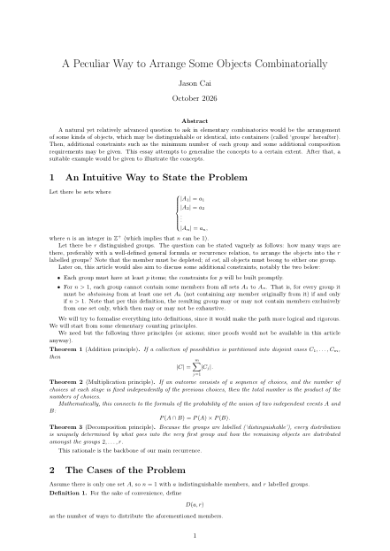
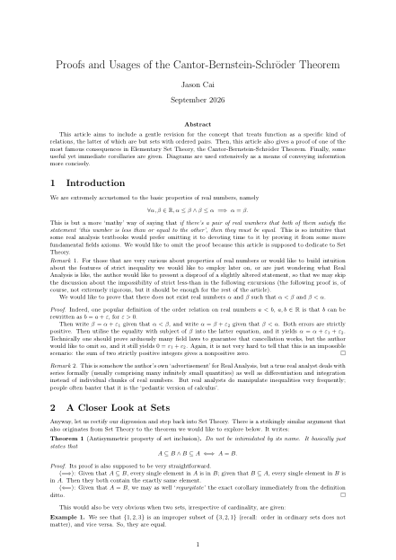
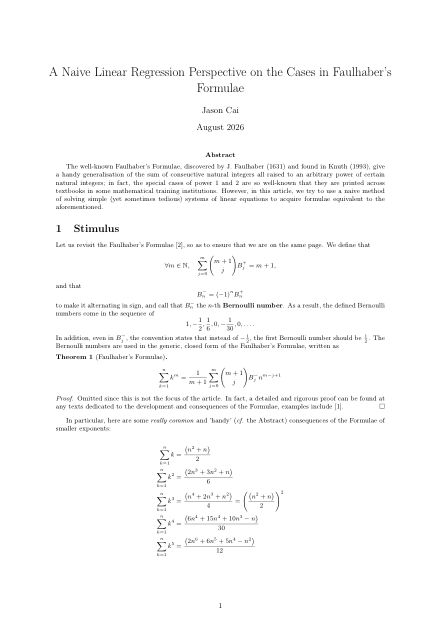

The following articles are all written by Jason Cai. As mentioned in the introduction of this site, it mainly consists of notes and mathematical insights drawn and developed by him, who is also the creator and the maintainer of this site.

October 2026
A natural yet relatively advanced question to ask in elementary combinatorics would be the arrangement of some kinds of objects, which may be distinguishable or identical, into containers (called ‘groups’ hereafter). Then, additional constraints such as the minimum number of each group and some additional composition requirements may be given. This essay attempts to generalise the concepts to a certain extent. After that, a suitable example would be given to illustrate the concepts.
Download Immediately
September 2026
This article aims to include a gentle revision for the concept that treats function as a specific kind of relations, the latter of which are but sets with ordered pairs. Then, this article also gives a proof of one of the most famous consequences in Elementary Set Theory, the Cantor-Bernstein-Schröder Theorem. Finally, some useful yet immediate corollaries are given. Diagrams are used extensively as a means of conveying informtion more concisely.
Download Immediately
August 2026
The well-known Faulhaber’s Formulae, discovered by J. Faulhaber (1631) and found in Knuth (1993), give a handy generalisation of the sum of conseuctive natural integers all raised to an arbitrary power of certain natural integers; in fact, the special cases of power 1 and 2 are so well-known that they are printed across textbooks in some mathematical training institutions. However, in this article, we try to use a naive method of solving simple (yet sometimes tedious) systems of linear equations to acquire formulae equivalent to the aforementioned.
Download ImmediatelyThe Articles